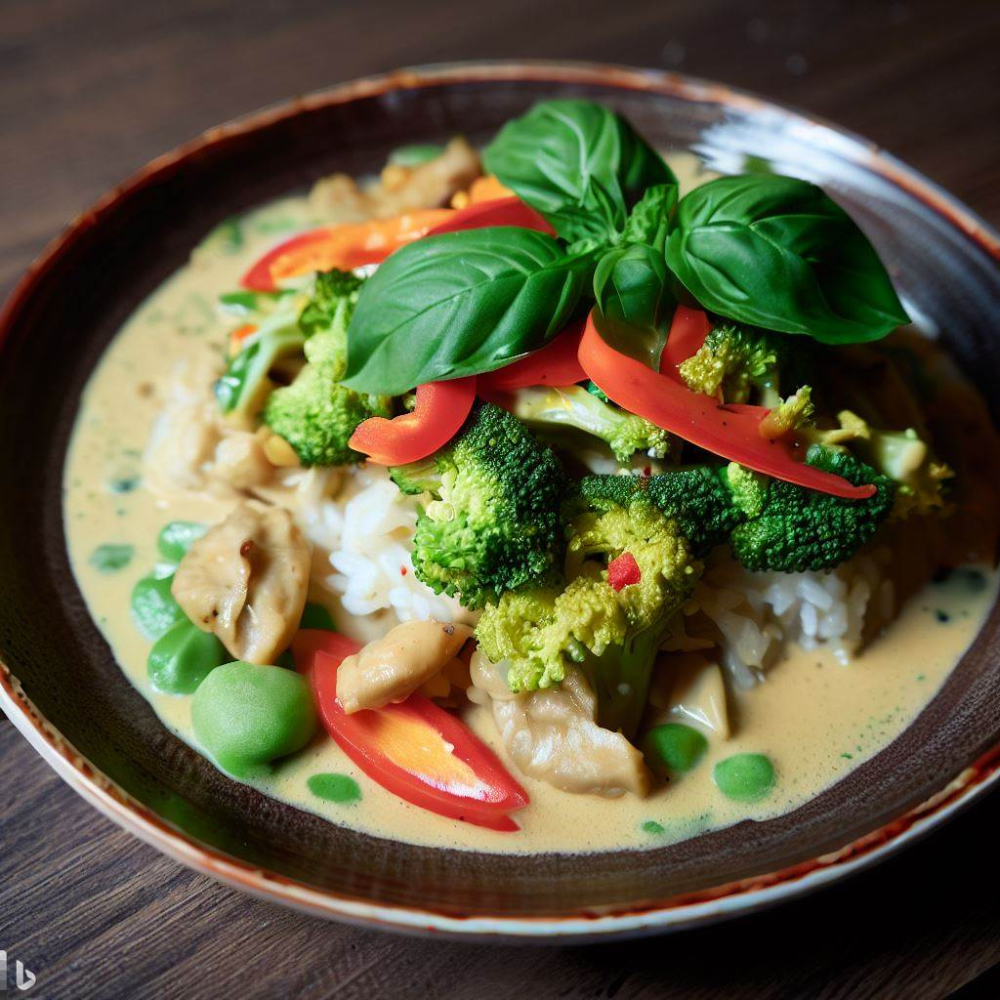

Farm Stand Vegetable Green Curry

Simple green curry using seasonal spring vegetables.
Ingredients
- 2 Tbsp. vegetable oil
- 1/4 cup thai green curry paste
- 2 Tbsp. garlic, finely chopped
- 28oz unsweetened coconut milk
- 4 tsp. soy sauce
- 4 tsp. fresh ginger, finely chopped
- 1 bunch broccoli, cut into florets (about 6 cups)
- 2 red bell peppers, cut into chunks
- 3 cups green beans, sliced into 2-inch pieces
- 1 cup loosely packed fresh basil, chopped
Method
-
In a skillet heat the oil over high heat, stir in curry paste and garlic, cook for 1 minute.
-
Stir in the coconut milk, soy sauce, ginger and vegetables. Cover and simmer, stirring occasionally.
-
When vegetables are cooked but still crisp, about 4 minutes, stir in basil and serve.
Notes
-
You can replace the vegetables with any vegetables of your choice that are in season.
-
Serve over basmati rice.
-
Serves 8 people.